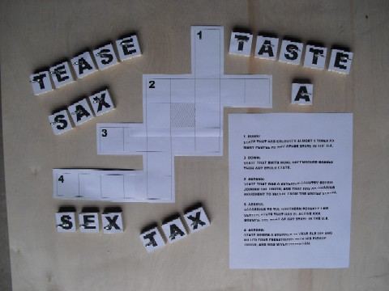

|  |
-
Back to one of my favorite topics!
Here are the clues:
1 down:
The state that has executed almost four times as
many people as any other state in the U.S.
2 down:
The state that that emits more greenhouse
gasses than any other state in the U.S.
2 across:
The state that was a soverign country before
joining the union, and that has an ongoing
movement to secede from the United States.
3 across:
According to the Southern Poverty Law Center,
the state that has 26 active KKK groups,
the most of any state in the U.S.
4 across:
The state where a drunken 16 year old hit
and killed four pedestrians with his pickup truck,
and was given probation.
-
Click on the picture for the solution.